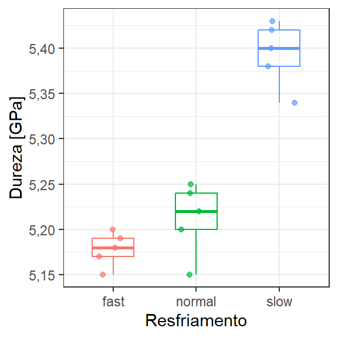

| ordem | cooling | hardness |
|---|---|---|
| 10 | slow | 5.34 |
| 3 | slow | 5.43 |
| 12 | slow | 5.42 |
| 7 | slow | 5.40 |
| 2 | slow | 5.38 |
| 15 | normal | 5.20 |
| 6 | normal | 5.22 |
| 8 | normal | 5.15 |
| 14 | normal | 5.25 |
| 9 | normal | 5.24 |
| 13 | fast | 5.20 |
| 11 | fast | 5.15 |
| 5 | fast | 5.19 |
| 4 | fast | 5.17 |
| 1 | fast | 5.18 |
3 Planejamento totalmente aleatorizado e análise de variância para um fator
3.1 Introdução
Quando deseja-se testar a diferença entre médias para três ou mais amostras ou tratamentos, deve-se utilizar a análise de variância (ANOVA). A presença de três ou mais tratamentos é comum em diversos estudos experimentais, tornando a análise de variância umas das técnicas mais importantes em inferência estatística. Este tipo de estudo é geralmente planejado usando o planejamento totalmente aleatorizado.
Existem diversos tipos de ANOVA, considerando o número de fatores em avaliação, efeitos fixos ou aleatórios, etc. Neste primeiro momento será abordada a ANOVA para um fator ou ANOVA de uma via (one-way) com modelo de efeitos fixos.
Neste capítulo são utilizados os pacotes dplyr e ggpplot2, além das funções básicas do R. Recomenda-se a instalação destes utilizando o comando install.packages("<nome_pacote>"). A instalação é realizada uma única vez, porém o pacote deve ser carregado via library(<nome_pacote>) sempre que deseja-se usar suas funções.
3.2 Análise de variância para um fator
Seja o conjunto geral de dados resumido na Tabela 3.1. Neste conjunto tem-se \(a\) tratamentos de interesse e \(n\) observações ou replicações experimentais em cada tratamento. De forma geral, cada observação pode ser denotada como \(y_{ij}\), com \(i = 1, ..., a\) e \(j = 1, ..., n\).
| Tratamentos | Observações | Somas | Médias |
|---|---|---|---|
| 1 | \(y_{11}\), \(y_{12}\), …, \(y_{1n}\) | \(y_{1.} = \sum_{j=1}^{n}{y_{1j}}\) | \(\bar{y}_{1.} = y_{1.}/n\) |
| 2 | \(y_{21}\), \(y_{22}\), …, \(y_{2n}\) | \(y_{2.} = \sum_{j=1}^{n}{y_{2j}}\) | \(\bar{y}_{2.} = y_{2.}/n\) |
| \(\vdots\) | \(\vdots\) | \(\vdots\) | \(\vdots\) |
| a | \(y_{a1}\), \(y_{a2}\), …, \(y_{an}\) | \(y_{a.} = \sum_{j=1}^{n}{y_{aj}}\) | \(\bar{y}_{a.} = y_{a.}/n\) |
Ainda na Tabela 3.1 é importante obter os totais e as médias de cada tratamento, \(y_{i.}\) e \(\bar{y}_{i.}\), \(i = 1, ..., a\), para facilitar os cálculos necessários à análise.
Cada observação experimental \(y_{ij}\) pode ser discriminada conforme o modelo apresentado na Equação 3.1, o modelo de efeitos fixos da ANOVA. Neste modelo a média geral ou grande média denotada \(\mu\) e calculada conforme a Equação 3.2. O efeito de cada tratamento \(\alpha_{i}\) consiste na diferença entre médias do tratamento e a média geral, \(i = 1, ..., a\), segundo Equação 3.3. Por fim, o termo de erro \(\varepsilon_{ij}\) consiste na diferença entre cada observação e a média dentro do seu tratamento, \(i = 1, ..., a\), \(j = 1, ..., n\), conforme Equação 3.4. Sobre o termo de erro residem as hipóteses de que este seja normalmente e independentemente distribuído com média nula e variância \(\sigma^2_\varepsilon\), ou seja, \(\varepsilon_{ij} \sim N(0,\sigma^2_\varepsilon)\).
A média logicamente pode variar de tratamento para tratamento, sendo esta hipotética variação testada estatísticamente. Já a variância dentro dos tratamentos é assumida constante.
\[ y_{ij} = \mu + \alpha_{i} + \varepsilon_{ij} \tag{3.1}\] \[ \mu = \bar{y}_{..} = \frac{ \displaystyle\sum_{i=1}^{a} \displaystyle\sum_{j=1}^{n}{y_{ij}}}{an} \tag{3.2}\] \[ \alpha_{i} = \bar{y}_{i.} - \bar{y}_{..} \tag{3.3}\] \[ \varepsilon_{ij} = y_{ij} - \bar{y}_{i.} \tag{3.4}\]
Este modelo é chamado de modelo de efeitos fixos, com cada efeito dentro dos tratamentos a ser estimado fixo porém desconhecido. Este tipo de modelo é o mais comum na análise de variância, sendo utilizado quando deseja-se conhecer apenas o efeito dos tratamentos considerados. No caso onde se selecionam de forma aleatória \(a\) tratamentos de uma ampla população, desejando-se conhecer o efeito para toda população de origem, deve-se utilizar um modelo de efeitos aleatórios.
As hipóteses testadas na análise de variância são relacionadas aos efeito dos tratamentos e de forma análoga à média destes. A hipótese nula consiste na nulidade dos efeitos, enquanto a hipótese alternativa sugere que ao menos um dos efeitos é não nulo ou, de outra forma, ao menos uma média dos tratamentos é distinta dos demais. As hipóteses são formuladas à seguir.
\[ H_0: \alpha_1= \alpha_2 = ... = \alpha_a = 0 \] \[ H_0: \alpha_i \ne 0, \text{para ao menos um } i \]
A análise de variância é um teste para diferença entre médias baseado no particionamento da soma dos quadrados total, na soma dos quadrados entre tratamentos e na soma dos quadrados dentro dos tratamentos, conforme Equação 3.6. A variância total das observações experimentais da Tabela 3.1 é expressa conforme Equação Equação 3.6. O numerador do cálculo, \(SS_T\), é a soma dos quadrados total, enquanto o denominador, \(DF_T\), consiste nos graus de liberdade total.
\[ s_T^2 = s_{Entre}^2 + s_{Dentro}^2 \tag{3.5}\] \[ s_T^2 = \frac{SS_T}{DF_T} = \frac{\displaystyle\sum_{i=1}^{a} \displaystyle\sum_{j=1}^{n}({y_{ij}-\bar{y}_{..}})^2}{an-1} \tag{3.6}\]
Tomando a soma dos quadrados total, \(SS_T\), é possível particioná-la na soma dos quadrados entre os tratamentos, \(SS_{Trat}\), e na soma dos quadrados dentro dos tratamentos, \(SS_{Erro}\), conforme a Equação 3.7. Pode-se observar que a soma dos quadrados dos tratamentos e a soma dos quadrados dos erros são as somas dos quadrados dos efeitos expostos nas Equação 3.3 e Equação 3.4, respectivamente. Na Tabela 3.1 estas quantidades estão relacionados à variabilidade entre as linhas e dentro das linhas.
\[ \underbrace{\displaystyle\sum_{i=1}^{a} \displaystyle\sum_{j=1}^{n}({y_{ij}-\bar{y}_{..}})^2}_{SS_T}= \underbrace{n\displaystyle\sum_{i=1}^{a} ({\bar{y}_{i.}-\bar{y}_{..}})^2}_{SS_{Trat}}+ \underbrace{\displaystyle\sum_{i=1}^{a} \displaystyle\sum_{j=1}^{n}({y_{ij}-\bar{y}_{i.}})^2}_{SS_{Erro}} \tag{3.7}\]
Os graus de liberdade dos tratamentos estão relacionados ao número de tratamentos em estudo, \(DF_{Trat} = a-1\). Tomando a razão entre a soma dos quadrados e os graus de liberdade dos tratamentos, conforme Equação 3.8 tem-se a média dos quadrados dos tratamentos, \(MS_{Trat}\). Esta medida é a estimativa da variância entre os tratamentos, \(\sigma_{Trat}^2=MS_{Trat}\). Quanto maior esta medida, maior a diferença entre médias dos tratamentos. Entretanto, esta diferença deve ser avaliada relativamente à variância dentro dos tratamentos, isto é, em relação à variância experimental.
\[ MS_{Trat} = \frac{n\displaystyle\sum_{i=1}^{a} ({\bar{y}_{i.}-\bar{y}_{..}})^2}{a-1} \tag{3.8}\]
Os graus de liberdade dos erros devem ser avaliados com mais cuidado. Para o i-ésimo tratamento a i-ésima variância é calculada conforme a Equação 3.9. Combinando todas as variâncias dos \(a\) tratamentos, tem-se o resultado da Equação 5.8. A média dos quadrados dos erros, \(MS_E\), é a estimativa da variância experimental na ANOVA, \(\sigma_\varepsilon^2=MS_E\). As médias dos quadrados são distribuídas pela distribuição \(\chi^2\), por constarem de somas de desvios quadráticos em relação à média, isto é, soma dos quadrados de quantidades distribuídas pela normal-padrão \(Z\).
\[ s_i^2 = \frac{\displaystyle\sum_{j=1}^{n}({y_{ij}-\bar{y}_{i.}})^2}{n-1} \tag{3.9}\] \[ MS_E = \frac{\displaystyle\sum_{i=1}^{a}\displaystyle\sum_{j=1}^{n}({y_{ij}-\bar{y}_{i.}})^2}{a(n-1)} \tag{3.10}\]
A estatística do teste ANOVA, \(F_0\), é calculada conforme Equação 3.11, como a razão entre as médias dos quadrados dos tratamentos e dos erros. Quanto maior esta razão, maior a diferença entre os efeitos, relativamente ao erro experimental. Como esta quantidade consiste na razão entre médias dos quadrados, isto é, entre estimativas de variâncias ela é distribuída pela distribuição \(F\), \(F_0 \sim F_{(a-1,a(n-1))}\). A hipótese \(H_0\) de nulidade e igualdade dos efeitos é rejeitada se \(F_0 > F_{(\alpha,a-1,a(n-1))}\). A Tabela 3.2 resume os cálculos da ANOVA. Geralmente os resultados obtidos via ANOVA são apresentados neste formato.
\[ F_0 = \frac{MS_{Trat}}{MS_{Erro}} \tag{3.11}\]
| Fonte | DF | SS | MS | \(F_0\) |
|---|---|---|---|---|
| Tratamentos | \(a-1\) | \(SS_{Trat}\) | \(SS_{Trat}/(a-1)\) | \(F_0 = MS_{Trat}/MS_{Erro}\) |
| Erro | \(a(n-1)\) | \(SS_{Erro}\) | \(SS_{Erro}/[a(n-1)]\) | - |
| Total | \(an - 1\) | \(SS_{T}\) | - | - |
Existem algumas medidas de ajuste usadas para averiguar a efetividade do modelo obtido via ANOVA. O coeficiente de determinação simples \(R^2\) é calculado conforme a Equação 3.12, como a razão entre a soma dos quadrados dos tratamentos e a soma dos quadrados total. Esta medida deve ser usada com cautela, por não levar em consideração o número de graus de liberdade do modelo. neste sentido, o coeficiente de determinação ajustado \(R_{aj}^2\) é obtido conforme a Equação 3.13, sendo uma medida mais adequada para mensurar a variabilidade dos dados explicado pelo modelo ANOVA.
\[ R^2 = \frac{SS_{Trat}}{SS_T} \tag{3.12}\] \[ R_{aj}^2 = 1 - \frac{MS_{Trat}}{SS_T/(an-1)} \tag{3.13}\]
A ANOVA para um fator considerando três ou mais tratamentos é comumente chamada de ANOVA de uma via. Para conduzir este tipo de análise, deve-se utilizar o chamado planejamento totalmente aleatorizado ou delineamento inteiramente casualizado. Neste planejamento todas as \(N = an\) observações experimentais são conduzidas em ordem e alocação de materiais totalmente aleatória. A aleatorização auxilia na garantia das hipóteses de normalidade e independência dos resíduos. Ao aleatorizar os experimentos garante-se que fontes externas incontroláveis de variação, chamadas de variáveis de ruídos, tenham interferência mínima ou ao menos tenham efeito diluído de forma aleatória nos resultados experimentais. As replicações viabilizam a estimativa do erro experimental. Sem a replicação não é possível testar a significância dos efeitos avaliados, visto que estes são sempre avaliados relativamente ao erro experimental.
Exemplo 3.1 (Efeito do método de resfriamento na microdureza da zirconia) Um estudo foi realizado para o efeito do método de resfriamento na microdureza da porcelana de zircônia para próteses dentárias. Três métodos de resfriamento foram testados. lento: as amostras são deixadas dentro do forno fechado e desligado até atingirem a temperatura ambiente; normal: as amostras são removidas e resfriadas à temperatura ambiente; e rápido: as amostras são imediatamente removidas do forno após o tempo de espera e jateadas por ar comprimido. Os resultados são apresentados na Tabela 3.3.
Para obter este planejamento pode-se utilizar o código à seguir no R.
# Valores experimentais de dureza
hardness <- c(5.34, 5.43, 5.42, 5.40, 5.38,
5.20, 5.22, 5.15, 5.25, 5.24,
5.20, 5.15, 5.19, 5.17, 5.18)
# Ordem de condução dos ensaios
set.seed(7) # para "controlar" a aleatorização
# seq é utilizado para obter uma sequencia
# sample com o argumento replace = FALSE para aleatorização
random <- sample(1:15, size = 15, replace = FALSE)
# Definindo tratamentos
cooling <- rep(c("slow","normal","fast"),each=5)
# Tratamentos como fatores
cooling <- as.factor(cooling)
# reunindo os dados em um data.frame
plan <- data.frame(random, cooling, hardness)Para realizar a análise é utilizado o comando aov(). Pelos resultados, como \(F_0 = 62,84 > 3,89 = F_{(0,05;2;12)}\), ou como \(p-value = 4,38 \times 10^{-7} < 0,05 = \alpha\), rejeita-se \(H_0\). Deste modo, há ao menos um dos tratamentos com efeito diferente, de forma que há influência do tipo de resfriamento na microdureza. A estatística de ajuste \(R_{aj}^2=0,898\), garante que a maior parte da variabilidade dos dados é explicada pelo efeito dos tratamentos e não pelo erro experimental.
# ANOVA para dureza em função do resfriamento
res.anova <- aov(hardness ~ cooling, data = plan)
summary(res.anova) Df Sum Sq Mean Sq F value Pr(>F)
cooling 2 0.13489 0.06745 62.84 4.38e-07 ***
Residuals 12 0.01288 0.00107
---
Signif. codes: 0 '***' 0.001 '**' 0.01 '*' 0.05 '.' 0.1 ' ' 1#F para 0,05 de significância
F_critico <- qf(.95, df1=2, df2=12)
F_critico[1] 3.885294# Modelo linear associado à ANOVA
# Importante para obter as medidas de ajuste - R^2
lm1 <- lm(hardness ~ cooling, data = plan)
summary(lm1)
Call:
lm(formula = hardness ~ cooling, data = plan)
Residuals:
Min 1Q Median 3Q Max
-0.062 -0.013 0.006 0.024 0.038
Coefficients:
Estimate Std. Error t value Pr(>|t|)
(Intercept) 5.17800 0.01465 353.411 < 2e-16 ***
coolingnormal 0.03400 0.02072 1.641 0.127
coolingslow 0.21600 0.02072 10.425 2.28e-07 ***
---
Signif. codes: 0 '***' 0.001 '**' 0.01 '*' 0.05 '.' 0.1 ' ' 1
Residual standard error: 0.03276 on 12 degrees of freedom
Multiple R-squared: 0.9128, Adjusted R-squared: 0.8983
F-statistic: 62.84 on 2 and 12 DF, p-value: 4.384e-07A Figura 3.1 ilustra a região crítica do teste, com regão de rejeição de \(H_0\) destacada em vermelho.
Para testar as pressuposições de normalidade e homocedasticidade pode-se utilizar os blocos de código à seguir. Para ambos os testes obteve-se \(p-value > \alpha\), não havendo indícios para rejeição da hipótese nula \(H_0\), implicando na normalidade dos resíduos e na igualdade de variâncias dos tratamentos.
# Extraindo resíduos
residuos <- res.anova$residuals
# Teste de normalidade dos resíduos
shapiro.test(residuos)
Shapiro-Wilk normality test
data: residuos
W = 0.92867, p-value = 0.2607# Teste de homocedasticidade
bartlett.test(hardness ~ cooling, data = plan)
Bartlett test of homogeneity of variances
data: hardness by cooling
Bartlett's K-squared = 1.831, df = 2, p-value = 0.4003A Figura 3.2, obtida com sintaxe à seguir, ilustra alguns gráficos dos resíduos que auxiliam na visualização das pressuposições da ANOVA. O gráfico superior esquerdo plota os resíduos \(\varepsilon_{ij}\) em relação aos valores previstos ou ajustados (fitted), \(\hat{y}_i=\mu+\alpha_i=\bar{y}_{i.}\). Um padrão de aleatoriedade, sem crescimento ou decrescimento de \(\varepsilon_{ij}\) em função de \(\hat{y}_i\) deve ser observado. Para o caso estudado não há indícios de dependência entre resíduos e valores ajustados. O gráfico superior direito é o gráfico quantil-quantil que plota os resíduos ordenados em função dos quantis teóricos da normal padrão. Quanto mais próximo da reta, melhor os resíduos se ajustam à distribuição normal. O gráfico inferior esquerdo plota a raiz quadrada dos resíduos padronizados em função dos valores ajustados. Este é um auxílio para ver, além da independência entre resíduos e ajustados, a homocedasticidade. No caso estudado, já confirmado estatísticamente, visualiza-se a homogeneidade da raiz dos resíduos padronizados em relação às médias dos tratamentos. O último gráfico, plotado no canto inferior direito, plota os resíduos em função dos níveis (tratamentos) experimentais. Deve-se averiguar por este gráfico a homogeneidade e independência dos resíduos em função dos níveis, além da possível presença de outliers, isto é, de valores discrepantes. Em caso de um ajuste baixo, isto é, um \(R_{aj}^2\) insuficiente, alguns experimentos com resíduos extremos destacados neste gráfico poderiam ser repetidos. No caso estudado não seria necessário.
# painel de 2 linhas e 2 colunas de gráficos
par(mfrow=c(2,2))
# gráficos dos resíduos
plot(res.anova)A Figura 3.3 apresenta gráficos de caixa ou box-plot da dureza em função do tipo de resfriamento, com código relacionado à seguir. O resfriamento lento garante maior microdureza da cerâmica.
# Box-plot
ggplot(plan, aes(x = cooling, y = hardness, color = cooling)) +
# Adicionar boxplot
geom_boxplot(width = 0.5, alpha = 0.2) +
# Adicionar pontos com jitter para visualizar distribuição dos dados
geom_jitter(width = 0.2, height = 0, alpha = 0.7) +
# Adicionar títulos aos eixos
labs(
x = "Resfriamento",
y = "Dureza [GPa]"
) +
# Remover legenda que seria redundante
theme(legend.position = "none")

A Figura 3.4 apresenta gráficos de médias com intervalos de confiança. Ao rejeitar a hipótese nula através da ANOVA, o analista apenas constata que há ao menos um efeito distinto dos demais, em conformidade com a hipótese alternativa \(H_1\). Entretanto, pode ser desejado investigar as diferenças específicas.
library(dplyr)
# Primeiro, vamos calcular a média e o intervalo de confiança para cada grupo
resumo <- plan %>%
group_by(cooling) %>%
summarise(
mean_hardness = mean(hardness),
# cálculo do intervalo de confiança de 95%
ci_lower = mean_hardness - qt(0.975, n()-1) * sd(hardness)/sqrt(n()),
ci_upper = mean_hardness + qt(0.975, n()-1) * sd(hardness)/sqrt(n())
)
# Agora criar o gráfico com ggplot2
ggplot() +
# Adicionar os pontos individuais com jitter
geom_jitter(data = plan,
aes(x = cooling, y = hardness),
width = 0.2, alpha = 0.5) +
# Adicionar linha conectando as médias
geom_line(data = resumo,
aes(x = cooling, y = mean_hardness, group = 1),
color = "blue", linewidth = 1) +
# Adicionar pontos para as médias
geom_point(data = resumo,
aes(x = cooling, y = mean_hardness),
color = "blue", size = 3) +
# Adicionar barras de erro para o intervalo de confiança
geom_errorbar(data = resumo,
aes(x = cooling,
ymin = ci_lower,
ymax = ci_upper),
width = 0.1, color = "blue") +
# Adicionar títulos aos eixos
labs(
x = "Resfriamento",
y = "Dureza [GPa]"
)3.2.1 Testes de comparações múltiplas
Posteriormente à ANOVA pode-se utilizar de testes de comparação de médias, ou de comparações múltiplas para testar as diferenças específicas. Nestes tipo de teste todas as comparações aos pares são realizadas entre as médias dos \(a\) tratamentos testados na ANOVA. A hipótese nula de cada comparação é sempre \(H_0:\mu_i = \mu_j\). Um teste bastante utilizado é o teste de Tukey HSD (honestly significant difference), por apresentar um bom controle da probabilidade de erro do tipo I. Entretanto, este teste é conhecido por apresentar alta probabilidade de erro do tipo II (baixo poder do teste). Outras opções disponíveis para comparações múltiplas como os testes de Duncan, teste t, teste de Newman-Keuls, teste t-bayesiano, entre outros.
O código à seguir pode ser utilizado para realizar o teste de Tukey. Pode-se confirmar que o resfriamento lento é diferente do resfriamento normal e do resfriamento rápido, enquanto estes dois não são estatísticamente diferentes.
# Teste de Tukey
TukeyHSD(res.anova) Tukey multiple comparisons of means
95% family-wise confidence level
Fit: aov(formula = hardness ~ cooling, data = plan)
$cooling
diff lwr upr p adj
normal-fast 0.034 -0.0212791 0.0892791 0.2670508
slow-fast 0.216 0.1607209 0.2712791 0.0000006
slow-normal 0.182 0.1267209 0.2372791 0.00000403.2.2 Poder do teste na ANOVA
É possível obter o poder do teste para ANOVA com o comando power.anova.test, conforme sintaxe à seguir. Pode-se observar que o poder foi unitário, o que já era esperado, uma vez que rejeitou-se a hipótese nula pela ANOVA.
# Power and sample size ANOVA
power.anova.test(groups = 3,
n = 5,
between.var = 0.06745,
within.var = 0.00107,
sig.level = 0.05)
Balanced one-way analysis of variance power calculation
groups = 3
n = 5
between.var = 0.06745
within.var = 0.00107
sig.level = 0.05
power = 1
NOTE: n is number in each groupCaso o experimentador deseje encontrar o número de réplicas adequado para um determinado poder do teste antes de planejar seu experimento, deve-se ter uma estimativa de \(SS_{Trat}\) e \(SS_{Erro}\), o que geralmente é difícil de conseguir, especialmente quando não se tem conhecimento da variabilidade acerca dos tratamentos em estudo.
Bibliografia
ANDERSON, Kenneth E. Computation of by Analysis of Variance. The American Statistician, v. 15, n. 2, p. 18-19, 1961.
ALMEIDA JUNIOR, Antonio Alves de et al. Effect of the cooling rate on the properties of veneer porcelain for zirconia dental prosthesis. Materials Research, v. 20, n. 5, p. 1418-1424, 2017.
BOX, George EP et al. Some theorems on quadratic forms applied in the study of analysis of variance problems, I. Effect of inequality of variance in the one-way classification. The annals of mathematical statistics, v. 25, n. 2, p. 290-302, 1954.
BUSSAB, Wilton de Oliveira; MORETTIN, Pedro Alberto. Estatística básica. 2009.
CASELLA, George; BERGER, Roger L. Statistical inference. Pacific Grove, CA: Duxbury, 2002.
COCHRAN, William G. The distribution of quadratic forms in a normal system, with applications to the analysis of covariance. In: Mathematical Proceedings of the Cambridge Philosophical Society. Cambridge University Press, 1934. p. 178-191.
CRUMP, S. Lee. The estimation of variance components in analysis of variance. Biometrics Bulletin, v. 2, n. 1, p. 7-11, 1946.
DANIELS, Henry E. The estimation of components of variance. Supplement to the Journal of the Royal Statistical Society, v. 6, n. 2, p. 186-197, 1939.
EISENHART, Churchill. The assumptions underlying the analysis of variance. Biometrics, v. 3, n. 1, p. 1-21, 1947.
FISHER, Ronald Aylmer et al. Statistical methods for research workers. Statistical methods for research workers, 5th Ed, 1934.
GURLAND, John; MCCULLOUGH, Roger S. Testing equality of means after a preliminary test of equality of variances. Biometrika, v. 49, n. 3-4, p. 403-417, 1962.
HALD, Anders. A history of parametric statistical inference from Bernoulli to Fisher, 1713-1935. Springer Science & Business Media, 2008.
KEMPTHORNE, Oscar. The randomization theory of experimental inference. Journal of the American Statistical Association, v. 50, n. 271, p. 946-967, 1955.
MONTGOMERY, Douglas C. Design and analysis of experiments. John wiley & sons, 2013.
MONTGOMERY, Douglas C.; RUNGER, George C. Applied statistics and probability for engineers. John Wiley & Sons, 2011.
PLACKETT, R. L. Models in the analysis of variance. Journal of the Royal Statistical Society: Series B (Methodological), v. 22, n. 2, p. 195-209, 1960.
SEARLE, Shayle R. Topics in variance component estimation. Biometrics, v. 27, n. 1, p. 1-76, 1971.
SHAO, Yiqin et al. Interfacial strength and debonding mechanism between aerogel-spun carbon nanotube yarn and polyphenylene sulfide. Composites Part A: Applied Science and Manufacturing, v. 88, p. 98-105, 2016.
SCHEFFE, Henry et al. Alternative models for the analysis of variance. The Annals of Mathematical Statistics, v. 27, n. 2, p. 251-271, 1956.
SNEDECOR, George W.; COCHRAN, Witiiam G. Statistical methods, 8thEdn. Ames: Iowa State Univ. Press Iowa, 1967.
TUKEY, John W. Comparing individual means in the analysis of variance. Biometrics, p. 99-114, 1949.
WASSERMAN, Larry. All of statistics: a concise course in statistical inference. Springer Science & Business Media, 2013.
ZUEV, Konstantin. Statistical Inference. 2018.